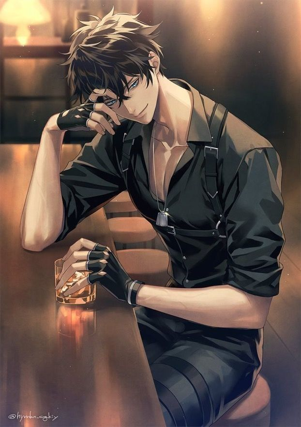

Code of the Heart

Hardik had always been the quiet genius in the back row—sharp mind, sharper goals.
He completed his 3-year diploma in Yavatmal. People knew him as “the guy who cracked the toughest codes in minutes.” But only a few knew that the real reason he topped every year was because of a certain girl who sat two benches ahead of him—Kaveri.
Kaveri was not just smart, she was charismatic, confident, and had this way of making everyone around her feel seen. Hardik admired her from a distance. They shared a few conversations during diploma, mostly academic, always polite—but nothing more.
Fate, it seemed, wasn’t done with them. Both got admitted to GH Raisoni College of Engineering in Nagpur, and by the time they reached 2nd year, they were not just classmates again—they were friends. Slowly, shared projects turned into late-night talks. Hardik, always awkward with feelings, found himself laughing easily when she was around.
But then entered the wildcard—Sarvesh.
Sarvesh was a final-year student with a reputation. He was a tech wizard, ran his own startup, and had just returned from a hackathon in Germany. The college was buzzing with his success. Professors loved him. Juniors idolized him. Girls adored him.
And guess what? Kaveri was assigned to intern under Sarvesh’s startup for a college project.
Hardik’s world tilted.
One day, after lab hours, he saw Kaveri and Sarvesh sitting at a café near campus. Laughing. Sharing stories. Something inside him snapped—not jealousy, but fear. Fear of losing the one person who made him feel less like an overachiever and more like a human.
He started pulling away, becoming quieter. Kaveri noticed. One evening, she confronted him.
“Why are you avoiding me, Hardik?”
“I’m not. Just… busy with assignments.”
“You’re lying. You never lie, Hardik.”
He was about to say something, but then Sarvesh showed up at the same spot—holding two coffees, casually handing one to Kaveri.
And that night, Hardik made a decision. He’d focus on his dream: an app that could change lives. Something he always wanted to build but never found the courage to begin. He buried himself in code, working day and night.
Weeks passed.
Then came the TechStorm Competition—a national-level contest for engineering students and startups. Hardik submitted his app—“Saathi” ,a mental health support platform powered by AI.
On the day of the presentation, he walked into the auditorium—and froze.
The judge panel had a surprise guest. Sarvesh.
And beside him—Kaveri.
But here comes the twist.
As Hardik began presenting, something odd happened. Sarvesh smiled. Not a cocky smile, but proud. When the panel asked questions, Sarvesh jumped in to defend Hardik’s logic. At the end, when the crowd applauded, Sarvesh stood up and announced:
“This app was Hardik’s idea. But what no one knows is—Kaveri came to me weeks ago, asking for help to support Hardik in secret. She believed in this app. She believed in him. And now, so do I.”
The room went silent.
Kaveri looked at Hardik and said, “I never wanted Sarvesh. I wanted you to see your own worth. And now you finally have.”
Hardik smiled, finally understanding everything.
They didn’t win the competition.
But he got the one thing he never dared to dream of.
A future—with her.